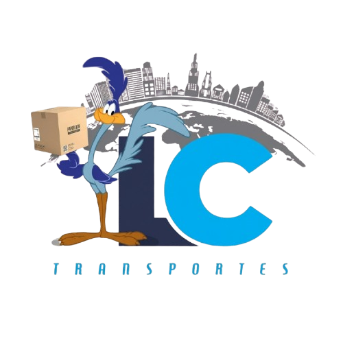

Não entregamos apenas pacotes, entregamos uma experiência de compra.
Transporte rodoviário de cargas e entregas porta a porta para o e-commerce, com agilidade, pontualidade, qualidade e segurança em todo o território nacional.
Empresas que já crescem com a LC Transportes
Sobre a LC Transportes
Após estudo e análise do mercado de transporte para entregas e-commerce, constatamos que agilidade, pontualidade e qualidade são os fatores mais valorizados — exigências primordiais dos clientes para garantir a satisfação do consumidor final ao receber o produto.
Nossa história
Dedicada ao transporte de cargas com abrangência em todo o território nacional, a LC Transportes foi fundada para atender especificamente o transporte de cargas pesadas, bem como entregas fracionadas, aperfeiçoando-se de acordo com a necessidade de cada material transportado.
Ao nos atentarmos para a demanda de entregas e-commerce com veículos utilitários, veículos de passeio e motos, passamos a nos dedicar a esse setor para atender as demandas dos parceiros. Há 6 anos iniciamos o desenvolvimento de uma vasta malha de entregas Last Mile, além das operações de First Mile, Middle Mile e Line Haul, com grande expertise em todos os processos e gestores com know-how operacional.
Ficha técnica
- Razão social
- LC Transportes e Logística Ltda
- Nome fantasia
- LC Transportes
- Ramo de atividade
- Transporte rodoviário de cargas
- CNPJ
- 43.387.429/0001-96
- Inscrição estadual
- 184.601.569
- Inscrição municipal
- 79.951-3
- Inscrição de localização
- 258.814-5
- Endereço
- Rua Rosendo Firmino Ferreira, 53 – SIM – Feira de Santana – BA – CEP 44085-122
- Dados bancários
- Banco Bradesco (237) – Ag. 2273 – CC 53558-3
Serviços
Operações completas de transporte, do primeiro ao último quilômetro, com vistoria, monitoramento e acompanhamento de cada operação.
Last Mile
Entregas porta a porta com retirada no hub do embarcador, feitas por entregadores que conhecem as rotas e se comprometem com prazo e qualidade.
First Mile
Coletas e primeira etapa da cadeia, com veículos e prazos ajustados à particularidade de cada embarcador.
Middle Mile
Transferências entre bases, rotas secundárias e abastecimento de hubs.
Line Haul
Transporte de longa distância e cargas pesadas, com Fiorino, Van, VUC, 3/4, Toco, Truck e Carreta.
Gestão de galpão
Separação, análise e bipagem de pacotes para evitar perdas com avarias ou extravios.
Gestão de frota e terceiros
Trabalhamos com frota própria e agregados, em uma grande malha de entregas, coletas, rotas secundárias e transferências. Uma equipe de acompanhamento e monitoramento garante que todas as informações cheguem aos clientes conforme a especificidade de cada operação.
Rotas de atendimento
Last Mile — retirada no hub do embarcador
Média diária de carros por estado.
Line Haul, Middle Mile e First Mile
Veículos: Fiorino, Van, VUC, 3/4, Toco, Truck e Carreta.
Equipe e segurança
Equipe treinada e envolvida em todo o processo operacional. Segurança e pontualidade são palavras-chave no nosso negócio: contamos com sistema de gestão de segurança para os motoristas, plano de manutenção dos veículos próprios e vistorias periódicas nos veículos agregados.
Entregadores
Grande conhecimento das rotas e compromisso com os prazos e a qualidade final das entregas junto ao consumidor.
Operacional
Treinada na separação e análise dos pacotes para evitar avarias e extravios, com agilidade na separação e bipagem para os entregadores.
Suporte
Atua junto aos entregadores: informa contatos de consumidores, ajuda a localizar ausentes ou endereços errados, acompanha devoluções e cuida do reenvio ou da devolução aos depósitos principais.
Gestores
Gerem todo o processo para uma operação sustentável, ágil e eficiente, cumprindo prazos e procedimentos de cada parceiro, com a satisfação total do consumidor ao receber o produto.
Missão, visão e valores
Missão
Fornecer serviços de entregas com agilidade e segurança, atendendo às necessidades operacionais dos clientes, fidelizando parcerias e agregando valor aos colaboradores e fornecedores.
Visão
Ser uma empresa reconhecida em entregas porta a porta e gestão de galpão, com comunicação aberta e entrega de soluções simples.
Política de qualidade
Compromisso com a melhoria contínua dos processos para a satisfação dos clientes externos e internos.
- Inovar e melhorar continuamente os processos de trabalho
- Buscar a otimização dos custos
- Utilizar o pleno potencial dos recursos humanos, por meio de qualificação e motivação
- Garantir o uso sustentável dos recursos
Valores
Bases operacionais
Seis bases na Bahia e no Ceará para operar perto de cada hub.
- Feira de Santana – BARua Rosendo Firmino Ferreira, 53 – SIM
- Conceição do Coité – BARua Oito de Dezembro, Praça da Matriz, 28 – Centro
- Alagoinhas – BAAv. Juracy Magalhães, 990 – Petrolar
- Santo Antônio de Jesus – BALoteamento São Mateus, 16 – Cajueiro
- Sobral – CERua Vereador Raimundo Nonato Pimentel Gomes, 33 – Dr. Juvêncio de Andrade
- Salvador – BARua Oswaldo Hugo Sacramento, S/N – Galpão 03
Documentação legal e cadastral
Regularidade fiscal, trabalhista e de seguros em dia, disponível para os parceiros.
Vamos conversar
Fale com a nossa equipe e conheça como podemos atender a sua operação.
Telefone
Celular
Matriz
Rua Rosendo Firmino Ferreira, 53 – SIM
Feira de Santana – BA – CEP 44085-122